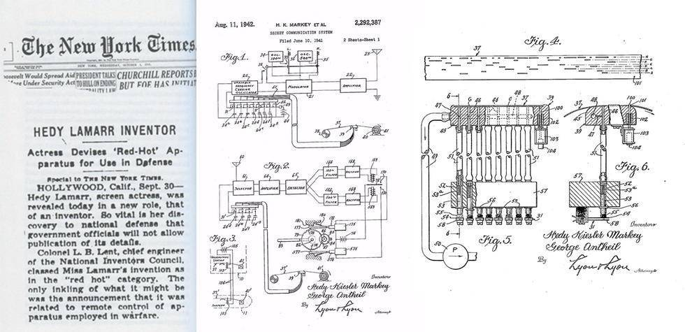

Sobre ela
Seu feito foi o desenvolvimento de uma tecnologia de salto de frequência, uma técnica que permite a transmissão de sinais de rádio de forma segura, alterando a frequência de transmissão em intervalos regulares. Essa invenção foi inicialmente projetada para ajudar na comunicação segura durante a Segunda Guerra Mundial, impedindo que os inimigos pudessem interceptar e bloquear os sinais de rádio.

Em 1942, junto com o compositor George Antheil, Hedy Lamarr patenteou esse sistema de comunicação, que usava rolos de filme perfurados para mudar as frequências de maneira sincronizada, permitindo que os torpedos guiados por rádio não fossem facilmente bloqueados ou capturados. Embora a tecnologia não tenha sido adotada amplamente durante a guerra, ela mais tarde se tornou a base para o desenvolvimento de tecnologias modernas, como o Wi-Fi, o Bluetooth e as comunicações celulares.
A patente de Lamarr e Antheil foi ignorada por muitos anos, mas sua importância foi reconhecida décadas depois. Hedy Lamarr recebeu, em 1997, o prêmio "Invenção e Tecnologia" do National Inventors Council e foi amplamente reconhecida por suas contribuições à ciência, além de sua carreira no cinema.
Hedy Lamarr é, portanto, uma figura única que combina talento artístico e inovação científica, tendo deixado um legado duradouro não apenas no mundo do entretenimento, mas também na tecnologia moderna.